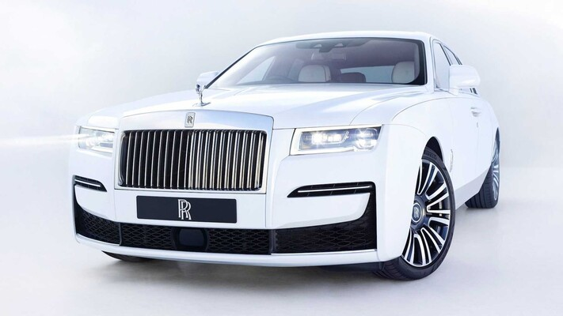

rolls-royce

En esta guía con los mejores coches de lujo del mercado hemos reunido la flor y nata de los segmentos de coches más exclusivos, para elaborar una lista de coches de auténtico lujo valorados por criterios editoriales y poder reunir los que nos parecen los mejores. Esta guía tiene la particularidad de que está siempre actualizada. En esta lista podréis encontrar coches de lujo bastante heterogéneos pero siempre exclusivos, caros y de altísima calidad para los amantes de lo más exclusivo. Esperamos que estéis de acuerdo con nuestra selección.